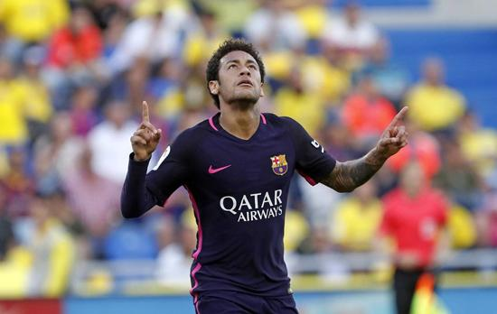

（西甲第37轮）拉斯帕尔马斯 1-4 巴塞罗那
2017-05-15 03:50:49
内马尔完成帽子戏法，苏亚雷斯打入一球帮助巴萨以4比1取胜，意味着联赛冠军之争将持续到最后一轮。
又一次，巴萨证明了自己是一支遵守诺言的球队。他们能做的就是继续取胜，以保持对皇马的压力。周日晚，巴萨以4比1战胜了拉斯帕尔马斯。完成帽子戏法的内马尔是此役最佳球员，而巴萨防线此役也有着出色的表现。
马斯切拉诺缺席，马龙首发
巴萨防线的危机在继续扩大，塞尔吉-罗伯托停赛一场，皮克因病缺席，而马斯切拉诺在热身时感觉不适，最后一刻缺席了比赛。这意味着巴西中卫马龙跻身首发阵容，完成了西甲处子秀，而迪涅则改打右后卫。
上半场踢得极为凌乱，尽管巴萨时而遇到麻烦，但他们两分钟的出色表现却改变了比赛的走势。第25分钟，布斯克茨漂亮的脚后跟妙传，伊涅斯塔精准直塞，苏亚雷斯没有选择射门，而是无私的传给了内马尔，后者轻松破门，巴萨取得了领先。
短短两分钟之后，巴萨就扩大了领先优势。内马尔迅速做出回报，为苏亚雷斯传出无可挑剔的直塞，乌拉圭前锋劲射攻破了巴拉斯把守的球门。
内马尔完成帽子戏法
主队前45分钟很少创造出破门机会，而在本赛季，拉斯帕尔马斯在主场屡屡有出色的表现。在中场休息之后，主队获得快速反击机会，比加斯将比分扳成了2比1。
巴萨变得紧张了？一点也不。片刻之后，巴萨就再度打入2球，拉基蒂奇右路很长，内马尔将球送入球网。很快，内马尔就再一次破门得分，这一次送出助攻的则是阿尔巴。
打入第四球之后，巴萨锁定了胜局，然而，唯一的坏消息时，皇马也战胜了塞维利亚。然而，生活中总是有希望，巴萨现在能做的就是在下周日战胜埃尔瓦，并且希望能从塞尔塔或马拉加那里得到一些好消息。本赛季的西甲或许在最后时刻会发生转折，希望如此！加油巴萨！
（摘自腾讯体育）